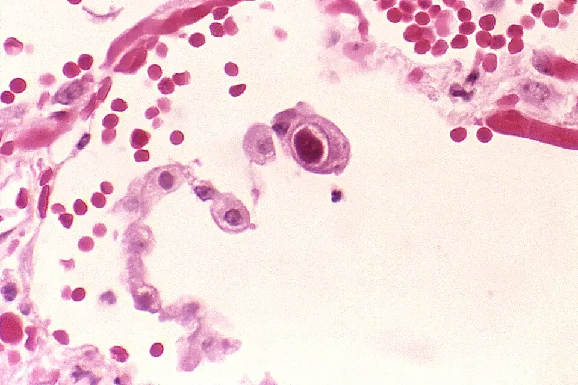

DX.8 — Infection congénitale à cytomégalovirus
Un nouveau-né microcéphale avec des pétéchies, un ictère ou un test auditif échoué impose une recherche de cytomégalovirus (CMV) avant le 21e jour de vieS2S3. Le bilan d’extension décide ensuite d’un antiviral, dont le bénéfice n’a été démontré que s’il débute pendant le premier mois de vieS2.
Ce cours DX.8 reprend les sources citées ; aucun médecin ne l’a encore validé cliniquement.
1. Définition
L’infection congénitale à CMV est l’infection du fœtus par le cytomégalovirus, un herpesvirus à ADN transmis de la mère à l’enfant pendant la grossesseS2S3.
2. Épidémiologie (Suisse, puis Europe)
Le CMV constitue l’agent d’infection congénitale le plus fréquent au monde, avec une prévalence à la naissance de 0,4 à 0,6 % dans les pays richesS2. Le risque de séquelles neurologiques permanentes atteint 17 à 20 % chez les enfants infectés, ce qui fait de cette infection un enjeu de santé publiqueS2S3.
En Suisse, environ une femme enceinte sur deux est immunisée, mais 1 à 2 % des femmes enceintes font une primo-infection pendant la grossesseS2. Les chiffres suisses et européens montrent surtout que le moment de l’infection maternelle prédit le risque de séquellesS2S3.
Chiffres lus : prévalence, transmission, séquelles
| Indicateur | Valeur | Population ou cadre | Source |
|---|---|---|---|
| Prévalence à la naissance | 0,4 à 0,6 % | Pays à revenu élevé, article suisse de 2026 | S2 |
| Prévalence mondiale | 0,64 % | Consensus européen ECCI (European congenital infection initiative) 2024 | S3 |
| Femmes enceintes immunisées | Environ une sur deux | Suisse et la plupart des pays européens | S2 |
| Séroprévalence des femmes enceintes | 50 à 85 % | Europe | S3 |
| Primo-infection pendant la grossesse | 1 à 2 % | Suisse | S2 |
| Transmission après primo-infection | 21 % périconceptionnelle, 36 % au premier trimestre, jusqu’à 66 % au troisième | Méta-analyse citée par l’article suisse | S2 |
| Séquelles selon le trimestre | 23 % après une primo-infection du premier trimestre, moins de 0,5 % plus tard | Article suisse de 2026 | S2 |
| Infection non primaire | Risque environ 10 fois plus faible qu’après une primo-infection | Réinfection ou réactivation | S2 |
| Part des primo-infections | Environ la moitié des infections congénitales en Europe | Consensus européen | S3 |
La majorité des enfants infectés naissent pourtant de mères déjà immunisées, parce que ces mères sont nombreuses, si bien que la vigilance doit rester universelleS2.
3. Physiopathologie
Le CMV se transmet par contact avec les sécrétions corporelles, en particulier la salive et l’urine des jeunes enfants, qui l’excrètent longtempsS2S3. Cette exposition explique que les femmes qui ont de jeunes enfants ou qui travaillent en crèche forment le groupe le plus à risqueS2.
La transmission verticale augmente avec l’âge de la grossesse, mais les atteintes fœtales graves surviennent presque uniquement après une infection périconceptionnelle ou du premier trimestreS2. Le tableau du moment de l’infection relie la période d’infection maternelle à la transmission et au risque de séquellesS2S3.
Moment de l’infection maternelle, transmission et séquelles
| Période de la primo-infection | Transmission au fœtus | Séquelles à long terme | Source |
|---|---|---|---|
| Préconceptionnelle, 2 à 8 semaines avant | 5,5 % | Non chiffrées dans les sources lues | S3 |
| Périconceptionnelle | 21 % | Atteintes sévères possibles | S2S3 |
| Premier trimestre | 36 % | 23 % | S2S3 |
| Deuxième trimestre | Plus fréquente | 0,1 % selon la méta-analyse européenne | S3 |
| Troisième trimestre | Jusqu’à 66 % | 0 % selon la méta-analyse européenne | S2S3 |
Le paradoxe tient donc au fait qu’une infection tardive se transmet plus souvent, alors qu’elle ne laisse pratiquement pas de séquelles gravesS2.
Chez le fœtus atteint, l’échographie peut montrer une ventriculomégalie, des calcifications intracrâniennes, un retard de croissance ou des anomalies du cortexS2. L’IRM (imagerie par résonance magnétique) révèle en outre des anomalies de la substance blanche et des malformations corticales que l’échographie manque souventS3.
L’atteinte de l’oreille interne explique la surdité neurosensorielle, qui peut s’aggraver avec le temps ou apparaître secondairement après une audition normale à la naissanceS2S3. Cette évolution différée justifie un suivi auditif prolongé, même chez l’enfant asymptomatique à la naissanceS2.
Les lésions cérébrales décrites ne sont pas toutes équivalentes, et leur lecture combine l’échographie et l’IRM dans des scores d’imagerieS3S2.
Lésions cérébrales et ce qu’elles signifient
| Lésion ou constat | Examen qui la montre | Portée | Source |
|---|---|---|---|
| Ventriculomégalie | Échographie fœtale ou cérébrale | Signe évocateur, souvent tardif au troisième trimestre | S2 |
| Calcifications intracrâniennes | Échographie | Signe évocateur de l’infection fœtale | S2 |
| Anomalies du cortex | Échographie, surtout IRM | Malformation corticale souvent manquée par l’échographie | S2S3 |
| Anomalies de la substance blanche | IRM | Lésion fréquente que l’échographie peut manquer | S3 |
| Vasculopathie lenticulo-striée isolée | Échographie | Portée pronostique encore mal comprise | S3 |
| Kystes périventriculaires | IRM | Facteur de risque de troubles vestibulaires | S3 |
| Atteintes extracérébrales isolées du fœtus | Échographie fœtale | Risque de séquelles de 30 % | S3 |
Le consensus européen classe ces anomalies en formes sévères et légères, mais la portée des formes légères reste incertaine pour le pronostic individuelS3.
Cellule cytomégalique : inclusion nucléaire du CMV. Les Centers for Disease Control and Prevention (CDC) fournissent cette microphotographie en couleurs, dans le domaine publicS4.

Regardez d’abord seul ce cliché : cherchez la cellule dont le noyau paraît démesuré par rapport aux autres.
La copie annotée montre trois repères qui opposent la cellule infectée aux éléments normaux voisins.
- 1. Le repère 1 montre la cellule cytomégalique, dont le noyau très agrandi contient une inclusion caractéristique du CMVS4.
- 2. Le repère 2 montre des globules rouges, qui donnent l’échelle et soulignent la taille anormale de la cellule infectéeS4.
- 3. Le repère 3 montre la paroi tissulaire voisine, dont les cellules gardent un noyau de taille habituelleS4.
Ce que l’image décide. Cette image de poumon illustre le nom du virus, mais le diagnostic néonatal repose sur la PCR (amplification génique) et non sur l’histologieS4S3.
4. Démarche diagnostique
La démarche vise d’abord les nouveau-nés à tester : enfants exposés, nouveau-nés symptomatiques, échecs du dépistage auditif et grands prématurésS2S3. Le médecin prélève alors une PCR sur urine ou salive dans les 21 premiers jours de vie, car ce délai seul distingue l’infection congénitale d’une infection acquiseS2S3.
Une PCR positive déclenche un bilan d’extension organisé au plus vite, car il décide du traitement et du suiviS2. La démarche en étapes fixe pour chaque étape son délai, son seuil et sa conduiteS2S3S5.
Démarche diagnostique en étapes, de la naissance au premier mois
| Étape | Ce que fait le médecin | Délai ou seuil | Conduite | Source |
|---|---|---|---|---|
| 1. Identifier | Exposition maternelle, signes évocateurs, test auditif suspect, prématuré | Moins de 32 semaines ou moins de 1500 g pour le prématuré | Tester | S2S3 |
| 2. Prélever | PCR sur urine ou salive | Avant le 21e jour de vie | Salive positive : confirmer sur urine | S2S3 |
| 3. Rattraper | PCR sur sang séché du test de Guthrie | Enfant âgé de plus de trois semaines | Diagnostic rétrospectif, sensibilité imparfaite | S3 |
| 4. Mesurer | Poids, taille et PC (périmètre crânien) | PC sous le 2e centile | Évaluation pédiatrique | S3S5 |
| 5. Bilan d’extension | Audition, fond d’œil, formule sanguine, tests hépatiques, échographie et IRM cérébrales | Au plus vite après la PCR | Classer l’atteinte | S2 |
| 6. Décider | Infectiologue pédiatre | Avant la fin du premier mois | Antiviral ou abstention | S2S3 |
| 7. Suivre | Audition, développement, vestibule | Jusqu’à 5 à 6 ans au minimum pour l’audition | Suivi selon le risque | S2S3 |
Chez la femme enceinte, la démarche repose sur la sérologie, l’avidité des IgG et l’amniocentèse, qui relèvent de l’équipe obstétricale et non du pédiatreS2S3. Le point 9 détaille cette lecture prénatale, car elle change la conduite néonatale, notamment le suivi auditifS2.
5. Anamnèse ciblée et drapeaux rouges
L’anamnèse maternelle cherche d’abord une primo-infection datée, car le trimestre de l’infection prédit à lui seul le risque de séquellesS2S3. Le médecin demande aussi une fièvre prolongée, un syndrome mononucléosique ou des transaminases élevées pendant la grossesse, qui justifient une sérologieS3.
Si le moment de l’infection reste inconnu, une sérologie maternelle rétrospective sur des prélèvements conservés permet souvent de le préciserS3. La grille d’anamnèse ciblée relie chaque question à la réponse inquiétante et à la conduite qu’elle entraîneS2S3.
Anamnèse ciblée : questions, réponses inquiétantes, conduite
| Question | Réponse qui inquiète | Conduite | Source |
|---|---|---|---|
| Sérologie CMV pendant la grossesse ? | Séroconversion ou IgM positives avec avidité basse | PCR néonatale avant 21 jours | S2S3 |
| Trimestre de l’infection maternelle ? | Périconceptionnelle ou premier trimestre | Suivi auditif et neurodéveloppemental complet | S2S3 |
| Amniocentèse faite ? | PCR positive dans le liquide amniotique | Bilan d’extension dès la naissance | S2 |
| Échographie prénatale ? | Ventriculomégalie, calcifications, retard de croissance | IRM néonatale | S2S3 |
| Enfants en bas âge à la maison, travail en crèche ? | Oui | Facteur d’exposition, conseils d’hygiène | S2 |
| Dépistage auditif néonatal ? | Échec ou doute | PCR CMV | S3 |
| Âge gestationnel et poids ? | Moins de 32 semaines ou moins de 1500 g | PCR à la naissance | S3S2 |
La sérologie maternelle répond à des indications précises, et le tableau des indications évite des tests inutiles qui inquiètent sans rien déciderS3S2.
Quand demander une sérologie CMV chez la femme enceinte
| Situation | Conduite recommandée | Raison | Source |
|---|---|---|---|
| Fièvre modérée prolongée, syndrome mononucléosique, transaminases élevées | Sérologie CMV | Signes compatibles avec une primo-infection | S3 |
| Statut inconnu ou séronégatif au premier trimestre | Sérologie le plus tôt possible, contrôle à 14 à 16 semaines | Couvrir tout le premier trimestre | S2S3 |
| Grossesse au-delà de 16 semaines sans signe échographique | Pas de sérologie | Les séquelles graves viennent des infections précoces | S3S2 |
| Signes échographiques compatibles | Sérologie à tout terme | Rechercher une infection fœtale | S3 |
| Femme séropositive connue avant la grossesse | Ni sérologie ni PCR sanguine ou urinaire | Aucun test ne date une infection non primaire | S3 |
| IgM positives isolées | PCR CMV sur sang total | Exclure ou confirmer une primo-infection en cours | S3 |
Les drapeaux rouges ne menacent pas la vie à court terme, mais ils ferment une fenêtre thérapeutique, ce qui justifie le rang d’exclusion E4S2. Le tableau des drapeaux rouges associe chaque signe à son délai d’actionS2S3.
Drapeaux rouges : la fenêtre du premier mois
| Drapeau rouge | Pourquoi il inquiète | Délai d’action | Source |
|---|---|---|---|
| Microcéphalie à la naissance | Atteinte cérébrale probable | PCR avant 21 jours, IRM | S3 |
| Pétéchies, thrombopénie | Forme symptomatique | PCR et bilan d’extension immédiat | S3 |
| Hépatosplénomégalie, ictère | Forme symptomatique | PCR et bilan d’extension immédiat | S3 |
| Échec du dépistage auditif | Surdité neurosensorielle possible | PCR avant 21 jours | S3S2 |
| Choriorétinite au fond d’œil | Atteinte ophtalmologique | IRM et avis infectiologique | S3 |
| Âge proche d’un mois sans décision | Bénéfice du traitement non démontré au-delà | Décision avant la fin du premier mois | S2 |
6. Examen physique ciblé, région par région
L’examen néonatal mesure le poids, la taille et le PC, puis il cherche les signes cutanés, abdominaux, oculaires, auditifs et neurologiques de l’infectionS3. Chaque région correspond à une fenêtre : mesures et tête, peau, abdomen, yeux, audition et neurologieS3.
Région 1 : mesures et tête
Microcéphalie congénitale comparée à un crâne de taille habituelle. Les CDC fournissent cette illustration en couleurs, dans le domaine publicS6.

Comparez d’abord seul les deux profils : le visage garde la même taille, mais la voûte diffère nettement.
La copie annotée montre quatre repères qui opposent la voûte réduite à la voûte attendue.
- 1. Le repère 1 montre la voûte crânienne réduite du nourrisson microcéphale, petite par rapport au visageS6.
- 2. Le repère 2 suit la ligne pointillée, qui dessine la taille de voûte attendue pour cet âgeS6.
- 3. Le repère 3 montre le front bas et fuyant, qui accompagne la voûte réduite sur ce profilS6.
- 4. Le repère 4 montre la voûte d’un nourrisson au PC habituel, qui sert de comparaisonS6.
Ce que l’image décide. L’image ne nomme pas la cause ; une microcéphalie congénitale impose donc une mesure standardisée du PC et une PCR CMV avant 21 joursS5S3.
Région 5 : audition
| Examen | Résultat évocateur | Conduite | Source |
|---|---|---|---|
| Otoémissions acoustiques | Absentes d’un ou des deux côtés | Potentiels évoqués auditifs | S2 |
| Potentiels évoqués auditifs | Surdité neurosensorielle | Traitement même si la surdité est isolée | S2S3 |
| Audition normale à la naissance | Surdité secondaire encore possible | Suivi jusqu’à 5 à 6 ans au minimum | S2 |
Région 6 : neurologie et développement
7. Approche syndromique
Le syndrome évocateur associe une microcéphalie à des signes systémiques, comme des pétéchies, une hépatosplénomégalie, un ictère ou une thrombopénieS3. Des signes plus discrets ou isolés restent peu spécifiques, si bien que la liste des enfants à tester demeure difficile à fixerS3.
L’infection congénitale à CMV sépare une forme symptomatique et une forme asymptomatique, que le bilan d’extension classe à partir de critères cliniques, biologiques et sensorielsS3. Le tableau différentiel oppose cette infection aux autres microcéphalies congénitales du lot, avec le signe qui les sépareS3S5.
Infection à CMV face aux autres microcéphalies du lot
| Diagnostic | Ce qui le rapproche | Ce qui le distingue | Examen discriminant | Source |
|---|---|---|---|---|
| Microcéphalie primitive génétique (DX.7) | Microcéphalie congénitale | Absence de signes systémiques et d’atteinte auditive infectieuse ; distinction déduite | PCR CMV négative, génétique | S3 |
| Troubles de l’alcoolisation fœtale (DX.9) | Microcéphalie, retard de croissance | Exposition à l’alcool, pas de virus ; distinction déduite | Anamnèse maternelle, PCR | S3 |
| Infection postnatale à CMV du prématuré | PCR positive | PCR négative à la naissance, positive plus tard | PCR à la naissance chez le grand prématuré | S3 |
| Retard de croissance intra-utérin isolé | Petit poids | Aucune autre manifestation | Bilan d’extension normal, pas de traitement | S3 |
Les distinctions marquées comme déduites ne figurent pas dans les sources lues, qui ne comparent pas ces entités entre ellesS3.
Le tableau des formes relie chaque présentation à sa conduite thérapeutique, ce qui évite de traiter un retard de croissance isoléS2S3.
Formes cliniques et conduite
| Forme | Exemples | Conduite | Niveau de preuve | Source |
|---|---|---|---|---|
| Atteinte significative | Imagerie cérébrale anormale, atteinte oculaire, forme disséminée | Valganciclovir pendant 6 mois | Modéré | S2 |
| Surdité isolée | Surdité neurosensorielle sans autre signe | Valganciclovir | Faible | S2S3 |
| Thrombopénie ou hépatite isolée persistante | Aucune autre manifestation | Traitement de 6 semaines | Très faible | S2S3 |
| Retard de croissance intra-utérin isolé | Aucune autre manifestation | Pas de traitement | Recommandation de grade D | S3 |
| Asymptomatique, infection maternelle tardive datée | Bilan normal | Suivi pédiatrique habituel | Recommandation européenne | S2S3 |
8. Diagnostic positif et critères
Le diagnostic positif repose sur une PCR CMV positive dans l’urine ou la salive, prélevée pendant les trois premières semaines de vieS3S2. Une PCR positive sur salive doit être confirmée sur urine, car le lait maternel ou les sécrétions génitales peuvent la contaminerS3.
Les critères chiffrés du diagnostic précisent la valeur de chaque prélèvement, ainsi que les pièges de la sérologie néonataleS3.
Critères du diagnostic et performance des prélèvements
| Prélèvement ou test | Performance | Interprétation | Conduite | Source |
|---|---|---|---|---|
| PCR sur salive | Sensibilité 93 à 100 %, valeur prédictive négative 98 à 99 % | Valeur prédictive positive faible, 49 à 73 % | Confirmer sur urine | S3 |
| PCR sur urine | Prélèvement de confirmation | Positive avant 21 jours : infection congénitale | Bilan d’extension | S3S2 |
| PCR sur sang séché | Sensibilité et spécificité poolées de 84,4 % à 99,9 % | Référence du diagnostic rétrospectif, mais peut manquer des cas | Utiliser après trois semaines | S3 |
| IgG CMV négatives chez la mère ou l’enfant | Exclusion | Pas d’infection congénitale | Arrêter les investigations | S3 |
| IgG CMV positives à la naissance | Non concluantes | Ni preuve ni exclusion | Sérologie néonatale non recommandée | S3 |
| PCR dans le LCR (liquide céphalo-rachidien) | Positive dans environ 13 à 15 % seulement | Faible apport, même avec atteinte cérébrale | Ne pas s’y fier pour exclure | S3 |
Une PCR positive après trois semaines ne prouve pas l’origine congénitale, car l’enfant a pu s’infecter après la naissance ; le sang séché tranche alors cette questionS3.
9. Examens complémentaires
Le bilan d’extension comprend un examen audiologique, un fond d’œil, une formule sanguine, des tests hépatiques, une échographie et une IRM cérébralesS2. Ces examens classent l’infection et décident du traitement, si bien qu’ils doivent se faire au plus vite après la naissanceS2S3.
Les examens ciblés précisent l’indication de chaque examen, et l’interprétation chiffrée traduit chaque résultat en conduiteS2S3.
Examens ciblés du bilan d’extension : indication et apport
| Examen | Indication | Ce qu’il recherche | Source |
|---|---|---|---|
| Otoémissions acoustiques puis potentiels évoqués auditifs | Tout enfant infecté | Surdité neurosensorielle | S2 |
| Fond d’œil | Tout enfant infecté, à la naissance | Choriorétinite | S2S3 |
| Formule sanguine | Tout enfant infecté | Thrombopénie, neutropénie | S2S3 |
| Tests hépatiques et bilirubine | Tout enfant infecté | Hépatite, cholestase | S2S3 |
| Échographie cérébrale | Première ligne | Calcifications, ventricules, kystes | S3 |
| IRM cérébrale | Signes cliniques, surdité, choriorétinite ou échographie anormale | Substance blanche, malformation corticale | S3 |
| IRM discutée | Infection maternelle du premier trimestre ou non datée | Atteinte infraclinique | S3 |
| Sérologie maternelle rétrospective | Moment de l’infection inconnu | Dater l’infection | S3 |
Interprétation chiffrée : valeur, lecture, conduite
| Mesure | Valeur | Lecture | Conduite | Source |
|---|---|---|---|---|
| Avidité des IgG maternelles | Plus de 60 % | Infection récente exclue | Pas de prévention secondaire | S2 |
| Avidité des IgG maternelles | Moins de 30 % | Primo-infection de moins de trois mois | Avis spécialisé, prévention secondaire discutée | S2 |
| Avidité des IgG maternelles | Entre les deux | Zone grise | Second test ou laboratoire expert | S2S3 |
| Amniocentèse | Au moins 8 semaines après l’infection et dès 17 semaines | Moins de faux négatifs | PCR sur liquide amniotique | S2S3 |
| Plaquettes fœtales | Moins de 120 G/L | Facteur associé à une forme modérée à sévère | Suivi spécialisé | S2 |
| Virémie fœtale | Au moins 100’000 unités internationales par millilitre | Facteur associé à une forme modérée à sévère | Suivi spécialisé | S2 |
| β2-microglobuline fœtale | Plus de 12 mg/L | Facteur associé à une forme modérée à sévère | Suivi spécialisé | S2 |
| Thrombopénie ou transaminases isolées du nouveau-né | Anomalie isolée persistante | Atteinte limitée | Traitement de 6 semaines | S2S3 |
Une échographie et une IRM fœtales normales gardent une valeur prédictive négative proche de 100 % pour les séquelles modérées à sévèresS3. Un risque résiduel de surdité unilatérale de 17 % persiste pourtant chez ces enfantsS3.
La sérologie maternelle se lit avec prudence, car les IgM persistent longtemps et réagissent parfois de façon croisée ; les performances des tests maternels l’expliquentS3.
Tests maternels : performances chiffrées et pièges
| Test | Performance publiée | Piège | Conséquence | Source |
|---|---|---|---|---|
| IgG CMV de dernière génération | Sensibilité 97 à 100 %, spécificité 96 à 100 % | Résultats discordants dans 1,0 à 2,6 % des échantillons | Contrôler une valeur faible | S3 |
| IgM CMV | Sensibilité supérieure à 98 % pour une infection du mois précédent | Détection de 51 à 90 % au troisième mois | Une IgM négative tardive n’exclut pas tout | S3 |
| IgM CMV au dépistage | Positives chez 0,9 à 5,7 % des femmes au premier trimestre | Valeur prédictive positive de 16,4 % | Toujours mesurer l’avidité | S3 |
| Persistance des IgM | 50 à 80 % des sérums jusqu’à 6 mois | Réactions croisées possibles | Ne jamais dater par les IgM seules | S3 |
| Avidité des IgG | Sensibilité 94 à 100 % pour exclure une infection de moins de 3 mois | Valeur intermédiaire encore présente à 6 mois | Second test d’avidité | S3 |
| PCR sanguine maternelle | 100 % les 2 premières semaines, 88 à 97 % à 4 semaines | Inutile pour dater l’infection | Réservée à l’IgM isolée | S3 |
Après une infection fœtale confirmée, l’équipe obstétricale suit le fœtus de près, et le suivi prénatal chiffré prépare la conduite néonataleS2S3.
Suivi du fœtus infecté et apport des examens
| Examen ou constat | Rythme ou valeur | Apport | Source |
|---|---|---|---|
| Échographie ciblée | Toutes les 2 à 4 semaines | Ventriculomégalie, calcifications, retard de croissance, cortex | S2 |
| IRM fœtale | Vers 32 semaines | Affiner le pronostic | S2S3 |
| PCR sur liquide amniotique | Spécificité proche de 100 %, sensibilité de 87 à 95 % | Diagnostic de l’infection fœtale | S3 |
| Cohorte suisse de 58 fœtus | 43 % de formes modérées à sévères | Ponction de sang fœtal entre 2007 et 2022 | S2 |
| Imagerie et biologie fœtales combinées | Valeur prédictive négative de 100 % | Identifier les fœtus à faible risque, suivi médian de 36 mois | S2 |
| Valaciclovir de l’amniocentèse à la naissance | Nouveau-nés symptomatiques : 66 % sans traitement, 18 % avec traitement | Étude cas-témoins, bénéfice encore discuté | S3S2 |
Le valganciclovir prénatal n’est pas recommandé à ce jour, même si des données préliminaires de tolérance existentS3S2.
Une amniocentèse négative faite au bon moment garantit l’absence de séquelles à long terme, même si environ 10 % de ces enfants naissent infectésS2. Le consensus européen rapporte de même que 8 % des nouveau-nés infectés après une amniocentèse négative n’avaient aucune séquelle à 2 à 3 ansS3.
10. Arbre décisionnel
L’arbre décisionnel part du nouveau-né à tester et se ramifie selon l’âge au prélèvement, le résultat de la PCR et le bilan d’extensionS3S2. Chaque branche aboutit à une décision prise avant la fin du premier mois, car le bénéfice du traitement dépend de ce délaiS2.
- Nouveau-né exposé ou symptomatique, ou dépistage auditif échoué : il faut une PCR sur urine ou salive avant le 21e jourS2S3.
- Enfant âgé de plus de trois semaines : le laboratoire recherche le virus par PCR sur le sang séché du test de GuthrieS3.
- PCR positive : le médecin organise au plus vite un bilan d’extension complet, avec audition, fond d’œil, sang, foie et imagerieS2.
- Atteinte significative ou surdité isolée : l’infectiologue pédiatre discute le valganciclovir, hors AIPS (information professionnelle suisse), avant la fin du premier moisS2S3.
- Thrombopénie ou hépatite isolée persistante : le consensus propose un traitement court de six semaines seulementS2S3.
- Enfant asymptomatique, bilan normal, infection maternelle tardive datée : le pédiatre propose un suivi habituel, sans suivi auditif spécialiséS2S3.
Le tableau de l’arbre contient chaque nœud sous forme de question fermée, avec la conduite si oui et si nonS2S3.
Arbre décisionnel détaillé
| Nœud | Question | Si oui | Si non | Source |
|---|---|---|---|---|
| A | Enfant âgé de moins de 21 jours ? | PCR sur urine ou salive | PCR sur sang séché | S2S3 |
| B | PCR salivaire positive ? | Confirmer sur urine | Infection congénitale peu probable | S3 |
| C | PCR confirmée ? | Bilan d’extension complet | Arrêt | S2 |
| D | Imagerie anormale, atteinte oculaire ou disséminée ? | Traitement de 6 mois | Nœud E | S2 |
| E | Surdité neurosensorielle ? | Traitement, preuve faible | Nœud F | S2S3 |
| F | Thrombopénie ou hépatite isolée persistante ? | Traitement de 6 semaines | Nœud G | S2S3 |
| G | Infection maternelle datée du deuxième ou troisième trimestre ? | Suivi pédiatrique habituel | Suivi auditif et neurodéveloppemental complet | S2 |
11. Prise en charge selon les recommandations suisses
11.A — But. Le traitement antiviral vise à préserver l’audition et à optimiser le devenir neurologique de l’enfant infectéS2. Le suivi vise ensuite à reconnaître tôt une surdité secondaire, un trouble vestibulaire ou un retard de développement, afin de les prendre en chargeS2S3.
11.B — Moyens. L’information professionnelle suisse (AIPS) de Valcyte ne mentionne pas l’infection congénitale, si bien que le traitement néonatal reste hors AIPSAIPS 55905S3. Le valganciclovir oral constitue le traitement de choix, et le ganciclovir intraveineux sert à l’enfant qui ne peut pas prendre de traitement entéralS3.
Le traitement structuré précise la molécule, la durée, les contrôles et les critères d’échec ; la fiche Valcyte reprend l’AIPS mot pour motS2S3AIPS 55905.
Traitement structuré du nouveau-né infecté
| Situation | Molécule | Dose | Durée | Contrôle | Critère d’échec et conduite | Source |
|---|---|---|---|---|---|---|
| Atteinte significative : imagerie, œil, forme disséminée | Valganciclovir oral | Hors AIPS : l’infectiologue pédiatre fixe la dose selon le consensus européen | 6 mois, début dans le premier mois | Formule sanguine et tests hépatiques | Neutropénie ou hépatotoxicité : avis infectiologique | S2S3 |
| Surdité isolée | Valganciclovir oral | Hors AIPS | 6 mois selon l’article suisse | Formule sanguine, tests hépatiques, audition | Surdité qui s’aggrave : appareillage et suivi | S2S3 |
| Thrombopénie ou hépatite isolée persistante | Valganciclovir oral | Hors AIPS | 6 semaines | Formule sanguine et tests hépatiques | Apparition d’autres signes : réévaluation | S2S3 |
| Voie entérale impossible ou forme très sévère | Ganciclovir intraveineux | Hors AIPS (indication non autorisée par Swissmedic) ; aucune dose ici | Relais oral dès que possible | Comme le valganciclovir | Relais impossible : avis spécialisé | S3 |
| Enfant âgé de plus d’un mois | Discussion au cas par cas | Sans objet | Sans objet | Sans objet | Bénéfice débattu au-delà du premier mois | S2 |
| Retard de croissance intra-utérin isolé | Aucune | Sans objet | Sans objet | Suivi | Sans objet | S3 |
Le valganciclovir et le ganciclovir n’étant pas autorisés pour cette indication, chaque cas se discute avec un infectiologue pédiatre, et l’inscription au registre international est proposéeS3.
Les preuves du traitement néonatal restent modestes, ce qui explique les niveaux de preuve faibles et la discussion au cas par casS3S2.
Ce que montrent les essais du traitement néonatal
| Étude | Population | Résultat | Portée | Source |
|---|---|---|---|---|
| Deux essais randomisés | Nouveau-nés symptomatiques | Bénéfice modeste sur l’audition et le développement à 24 mois | Fonde le traitement de l’atteinte significative | S3 |
| Comparaison de durées | 6 semaines contre 6 mois | Efficacité plus grande du traitement long | Fonde la durée de 6 mois | S3 |
| Essai non randomisé | Surdité isolée, début jusqu’à 13 semaines | Audition mieux préservée à 20 mois | Fonde le traitement de la surdité isolée | S3 |
| Essai randomisé tardif | Enfants de 1 mois à 4 ans, médiane de 13 mois | Aucune amélioration de l’audition 6 mois plus tard | Bénéfice douteux après le premier mois | S3S2 |
| Prématurés | Moins de 32 semaines | Aucun essai randomisé | Décision d’expert | S3 |
| Enfants asymptomatiques | Sans signe à la naissance | Essais interrompus faute de recrutement | Pas de traitement systématique | S3 |
Valganciclovir — Valcyte®, n° Swissmedic 55905, information de juin 2021
| Indication AIPS | Rétinite à CMV de l’adulte atteint de sida et prophylaxie après transplantation d’organe solide ; l’infection congénitale n’y figure pasAIPS 55905. |
|---|---|
| Enfants selon l’AIPS | « L’administration de Valcyte chez les patients pédiatriques n’est pas recommandée, étant donné que les propriétés pharmacocinétiques de ce produit n’ont pas été étudiées chez cette population de patients »AIPS 55905. |
| Dose | Hors AIPS chez le nouveau-né : ce cours ne donne aucune dose, que fixe l’infectiologue pédiatre selon le consensus européenAIPS 55905S3. |
| Durée publiée | Six mois pour une atteinte significative, six semaines pour une thrombopénie ou une hépatite isoléeS2S3. |
| Contrôle AIPS | « il est recommandé d’effectuer un contrôle de la numération des leucocytes tous les deux jours pendant les 14 premiers jours du traitement »AIPS 55905. |
| Seuils AIPS | « Le traitement ne doit donc pas être instauré lorsque le nombre absolu de neutrophiles est inférieur à 500 cellules/ μl, le nombre de thrombocytes inférieur à 25’000/ μl ou le taux d’hémoglobine inférieur à 8 g/dl »AIPS 55905. |
| Contre-indications | « Valcyte est contre-indiqué chez les patients présentant une hypersensibilité connue au valganciclovir, au ganciclovir ou à l’un des excipients conformément à la composition » ; « Valcyte est contre-indiqué pendant la grossesse, l’allaitement ainsi que chez l’homme désireux de concevoir un enfant »AIPS 55905. |
| Grossesse | « Valcyte ne doit pas être utilisé durant la grossesse »AIPS 55905. |
| Allaitement | « Il convient par conséquent de décider avant le début du traitement par Valcyte s’il faut arrêter d’allaiter ou si Valcyte ne doit pas être utilisé pendant la période d’allaitement »AIPS 55905. |
| Mise à jour | Information professionnelle de juin 2021AIPS 55905. |
Pendant la grossesse, le valaciclovir oral à haute dose réduit la transmission verticale après une primo-infection précoce, mais il reste hors AIPSS2S3. Le tableau du valaciclovir résume son cadre, sans dose, puisque l’équipe obstétricale la fixeS2S3.
Valaciclovir pendant la grossesse : prévention secondaire hors AIPS
| Élément | Contenu | Source |
|---|---|---|
| Indication | Primo-infection périconceptionnelle ou du premier trimestre | S2S3 |
| Statut | Hors autorisation de mise sur le marché, donc hors AIPS : aucune dose dans ce cours | S2 |
| Début et durée | Dès le diagnostic, jusqu’au résultat de l’amniocentèse | S2S3 |
| Effet | Transmission réduite d’environ 70 %, soit environ trois fois moins | S3S2 |
| Contrôle | Fonction rénale chaque mois | S2 |
| Effet indésirable | Insuffisance rénale aiguë dans 1 à 2 % des cas, surtout si la dose quotidienne n’est pas fractionnée | S2 |
| Cadre | Information détaillée et consentement éclairé signé par la patiente | S2 |
| Refus de l’amniocentèse | Arrêt entre 17 et 18 semaines, puis suivi échographique | S3 |
La prise en charge réunit plusieurs spécialistes, et le tableau des intervenants précise le rôle et le moment de chacunS2S3.
Qui fait quoi, et quand
| Intervenant | Moment | Rôle | Source |
|---|---|---|---|
| Obstétricien | Grossesse | Sérologie, avidité, amniocentèse, valaciclovir, suivi échographique | S2 |
| Radiologue | Grossesse et naissance | Échographie et IRM fœtales puis cérébrales | S2S3 |
| Néonatologue ou pédiatre | Naissance | PCR avant 21 jours, examen, bilan d’extension | S2 |
| Infectiologue pédiatre | Premier mois | Décision antivirale, surveillance biologique, registre international | S3 |
| Audiologiste et ORL (oto-rhino-laryngologiste) | Naissance puis jusqu’à 5 à 6 ans au minimum | Otoémissions, potentiels évoqués, appareillage | S2S3 |
| Neuropédiatre | Signes neurologiques ou imagerie anormale | Évaluation et suivi neurologique | S3 |
| Ophtalmologue | Naissance, puis seulement si rétinite | Fond d’œil et suivi de la rétinite | S3S2 |
11.C — Surveillance. Pendant le traitement, la formule sanguine complète et les tests hépatiques se contrôlent régulièrement, en raison du risque de neutropénie et d’hépatotoxicitéS2S3. La surveillance datée fixe ensuite le rythme du suivi auditif, neurodéveloppemental et vestibulaireS2S3.
Surveillance datée de l’enfant infecté
| Moment | Ce que l’on contrôle | Résultat attendu | Seuil d’alerte et conduite | Source |
|---|---|---|---|---|
| Naissance et pendant le traitement | Formule sanguine, tests hépatiques, audition | Valeurs stables | Neutropénie, hépatite : avis infectiologique | S2S3 |
| 6 et 12 mois, puis chaque année jusqu’à l’âge scolaire | Examen par l’infectiologue ou le pédiatre | Développement normal | Signe neurologique : neuropédiatre | S3 |
| Entre 6 et 8 mois | Dépistage vestibulaire chez l’enfant à risque | Motricité normale | Retard moteur : bilan vestibulaire | S3 |
| Entre 24 et 36 mois | Évaluation neurodéveloppementale de l’enfant à risque | Acquisitions normales | Retard : interventions ciblées | S3 |
| Jusqu’à 5 à 6 ans au minimum | Audition, même si elle était normale à la naissance | Audition conservée | Surdité secondaire : appareillage | S2S3 |
| Aussi longtemps que nécessaire | Audition de l’enfant sourd à la naissance | Stabilité | Aggravation ou atteinte de l’autre oreille | S3S2 |
| Une seule fois | Fond d’œil normal à la naissance | Aucune rétinite | Pas de suivi ophtalmologique | S2S3 |
Une surdité secondaire touche environ 7 % des enfants infectés à audition normale, de 2 % chez les asymptomatiques à 16 à 17 % chez les symptomatiquesS2.
11.D — Pronostic. Environ 17 à 20 % des enfants infectés gardent des séquelles, surtout une surdité, plus rarement un retard de développementS2. Chez le nouveau-né symptomatique, 40 à 58 % développent des incapacités neurologiques durables, contre 13,5 % de séquelles chez l’enfant sans signe apparentS3.
La majorité des enfants avec séquelles étaient pourtant asymptomatiques à la naissance, parce qu’ils sont bien plus nombreux que les symptomatiquesS2. Le risque de séquelles ne semble pas différer entre infection primaire et non primaire, si bien que le suivi reste le mêmeS2S3.
Les chiffres pronostiques détaillent les séquelles auditives, vestibulaires et neurodéveloppementales qui justifient chaque étape du suiviS3S2.
Pronostic chiffré : audition, vestibule, développement
| Séquelle | Fréquence | Population | Source |
|---|---|---|---|
| Surdité neurosensorielle à la naissance | 12,7 % | Enfants infectés dépistés à la naissance, étude prospective | S3 |
| Surdité différée | 4,5 % | Même étude prospective | S3 |
| Surdité progressive | Plus de 50 % | Enfants déjà sourds | S3 |
| Surdité tardive après infection du deuxième trimestre | 2,1 %, soit 3 enfants sur 140 | Étude rétrospective | S3 |
| Troubles vestibulaires | 17 % | Enfants infectés | S3 |
| Atteinte neurodéveloppementale | 30 à 66 % | Nouveau-nés symptomatiques, revue systématique | S3 |
| Incapacités neurologiques durables | 40 à 58 % | Forme cliniquement apparente à la naissance | S3 |
La surdité unilatérale de la naissance peut aussi gagner l’autre oreille, ce qui impose un suivi auditif aussi long que nécessaireS3S2.
12. Prévention
En l’absence de vaccin, la prévention primaire repose sur l’information et l’hygiène, qui doivent viser toutes les femmes en âge de procréer, séronégatives ou séropositivesS2S3. Le lavage des mains après contact avec les sécrétions d’enfants et le refus du partage des ustensiles constituent les mesures les plus efficacesS2.
Seules 20 à 40 % des femmes enceintes ont entendu parler du CMV, et 10 à 15 % d’entre elles connaissent les mesures préventivesS3. Les mesures de prévention distinguent prévention primaire, dépistage maternel et prévention secondaireS2S3.
Mesures de prévention et leur cadre
| Niveau | Mesure | Cadre ou chiffre | Source |
|---|---|---|---|
| Primaire | Se laver les mains après tout contact avec la salive ou l’urine d’un enfant | Toutes les femmes en âge de procréer | S2S3 |
| Primaire | Ne pas partager ustensiles, brosses à dents ou boissons, prudence lors des baisers | Mesures les plus efficaces | S2 |
| Dépistage | Sérologie le plus tôt possible au premier trimestre | Consensus en faveur, pas de dépistage universel dans la plupart des pays européens | S2S3 |
| Dépistage | Contrôle à 14 à 16 semaines chez la femme séronégative | Couvre tout le premier trimestre | S2 |
| Dépistage | Pas de sérologie après 16 semaines sans signe échographique | Grade A européen | S3 |
| Secondaire | Valaciclovir hors AIPS après primo-infection précoce | Transmission réduite d’environ 70 % | S3S2 |
| Néonatale | PCR des grands prématurés à la naissance | Moins de 32 semaines ou moins de 1500 g | S2S3 |
13. Points clés
- La PCR sur urine ou salive avant le 21e jour affirme l’infection congénitale ; une salive positive se confirme sur urineS2S3.
- Le bilan d’extension comprend audition, fond d’œil, formule sanguine, tests hépatiques, échographie et IRM cérébralesS2.
- Le valganciclovir est hors AIPS chez le nouveau-né, et son bénéfice n’est démontré que s’il débute pendant le premier moisAIPS 55905S2.
- Une atteinte significative se traite 6 mois, une thrombopénie ou une hépatite isolée 6 semainesS2.
- Le risque de séquelles atteint 23 % après une primo-infection du premier trimestre, contre moins de 0,5 % plus tardS2.
- Le suivi auditif dure jusqu’à 5 à 6 ans au minimum, car la surdité peut apparaître ou s’aggraver après la naissanceS2.
- La majorité des enfants infectés naissent de mères déjà immunisées, d’où une hygiène conseillée à toutes les femmes enceintesS2.
14. Pièges et questions fréquentes à l’examen fédéral suisse
Les pièges suivants reviennent dans les vignettes de l’examen fédéral, car le délai de 21 jours et la fenêtre du premier mois se confondent facilementS2S3.
La banque de questions montre, pour chaque vignette, la réponse attendue, sa justification et le délai en jeu.
Pièges et questions d’examen
| Question | Réponse | Justification | Source |
|---|---|---|---|
| Une sérologie IgG positive du nouveau-né prouve-t-elle l’infection congénitale ? | Non. | Des IgG positives à la naissance ne confirment ni n’excluent l’infection ; seule une PCR avant 21 jours conclut (point 8). | S3 |
| Un enfant de 6 semaines a une PCR urinaire positive : l’infection est-elle congénitale ? | Pas forcément. | Après trois semaines, seule la PCR sur sang séché de la naissance tranche (point 8). | S3 |
| Une salive positive chez un nouveau-né allaité suffit-elle ? | Non. | Le lait peut contaminer la salive ; il faut une PCR urinaire (point 8). | S3 |
| Traite-t-on une surdité isolée par valganciclovir ? | Oui, avec une preuve faible. | Le consensus européen le recommande avant la fin du premier mois (point 11). | S2S3 |
| Traite-t-on un retard de croissance intra-utérin isolé ? | Non. | Sans autre manifestation, aucun traitement n’est recommandé (point 7). | S3 |
| Le valganciclovir est-il autorisé en Suisse pour cette indication ? | Non. | L’AIPS ne la mentionne pas et déconseille l’usage pédiatrique (point 11). | AIPS 55905 |
| Une mère séropositive avant la grossesse protège-t-elle complètement l’enfant ? | Non. | Une réinfection ou une réactivation peut infecter le fœtus (point 2). | S2 |
| Une amniocentèse négative faite à 15 semaines rassure-t-elle ? | Non. | Elle se fait dès 17 semaines et au moins 8 semaines après l’infection maternelle (point 9). | S3S2 |
| Faut-il une sérologie CMV chez une femme séropositive connue avant la grossesse ? | Non. | Aucun test ne date une infection non primaire ; l’hygiène reste conseillée (point 5). | S3 |
| Un fond d’œil normal à la naissance impose-t-il un suivi ophtalmologique ? | Non. | Le suivi ophtalmologique ne concerne que la rétinite présente à la naissance (point 11). | S3 |
Sources
Toutes les sources ont été consultées le 13.11.2026. Les sources suisses précèdent les sources européennes.
- [S1] CIMS/SMIFK. PROFILES 2023 — Situations as Starting Points, SSP S1.13 (micro- and macrocephaly). https://www.smifk-cims.ch/profiles-2023/ssps
- [S2] Baud D, L’Huillier AG. CMV congénital : le paradoxe d’une infection fréquente et méconnue. Paediatrica, 30 juin 2026 (CHUV et HUG). https://www.paediatrieschweiz.ch/fr/cmv-congenital-le-paradoxe-dune-infection-frequente-et-meconnue
- [S3] Leruez-Ville M, Chatzakis C, Lilleri D, et al. Consensus recommendation for prenatal, neonatal and postnatal management of congenital cytomegalovirus infection from the European congenital infection initiative (ECCI). Lancet Reg Health Eur 2024;40:100892, CC BY 4.0 (Europe). https://doi.org/10.1016/j.lanepe.2024.100892
- [S4] Centers for Disease Control and Prevention (CDC), Public Health Image Library n° 958. Cytomegalovirus 01, domaine public, Wikimedia Commons (États-Unis, source non européenne). https://commons.wikimedia.org/wiki/File:Cytomegalovirus_01.jpg
- [S5] National Institute for Health and Care Excellence (NICE). NG127 — Suspected neurological conditions: recognition and referral, section 1.22, 2019, mise à jour 02.10.2023 (Royaume-Uni). https://www.nice.org.uk/guidance/NG127/chapter/recommendations-for-children-aged-under-16
- [S6] Centers for Disease Control and Prevention (CDC). Microcephaly comparison, domaine public, Wikimedia Commons (États-Unis, source non européenne). https://commons.wikimedia.org/wiki/File:Microcephaly-comparison-500px.jpg
- [AIPS 55905] Swissmedic, information professionnelle : Valcyte®, n° d’autorisation 55905, mise à jour juin 2021. https://files.refdata.ch/simis-public-prod/MedicinalDocuments/3c47e4498f894550a35df955eb7b66d2-fr.html